Image Warping and Mosaicing
En Hsin HOW
Homographies recovered from hand-clicked correspondences, two inverse warps written from scratch (nearest neighbour and bilinear), rectification as a test, and blended mosaics.
Contents
Overview
Points are written $(x, y)$ = (column, row), with $(0,0)$ at the centre of the top-left pixel.
A homography $H$ maps a point $p$ in one image to $p' \sim Hp$ in another. Every warp is an
inverse warp: each output pixel is mapped back through $H^{-1}$ and sampled from the
source. No cv2.findHomography, warpPerspective,
skimage.transform.warp or similar is used. The library calls doing real work are
np.linalg.lstsq / np.linalg.inv, and scipy's Gaussian blur and
distance transform for the blending.
A.1 · Shooting the Pictures
Photos were shrunk to at most 1000 px on the long side so clicking and warping stay quick. In every set the middle photo is the reference, and the others are warped into its frame.
Corridor
1_left.jpeg
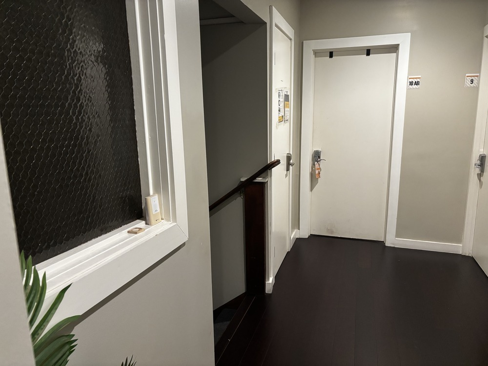
1_mid.jpeg (reference)
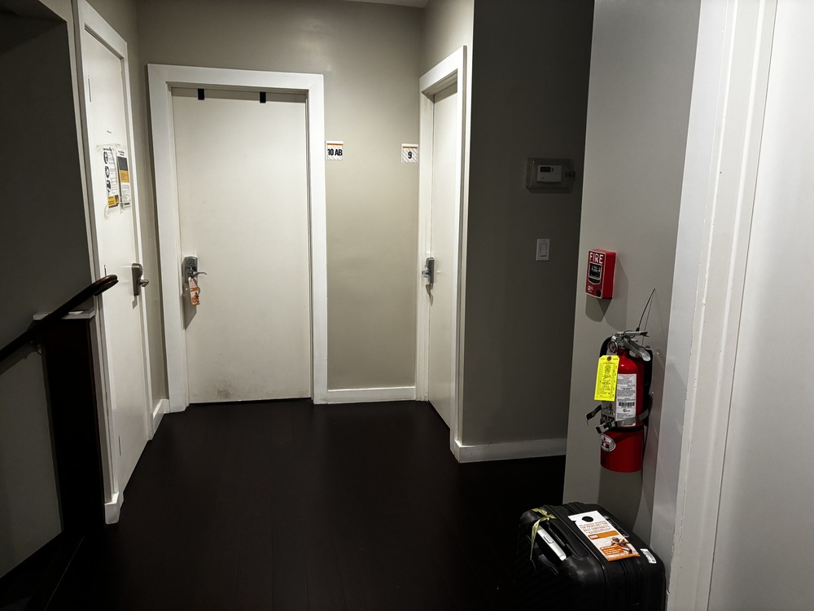
1_right.jpeg
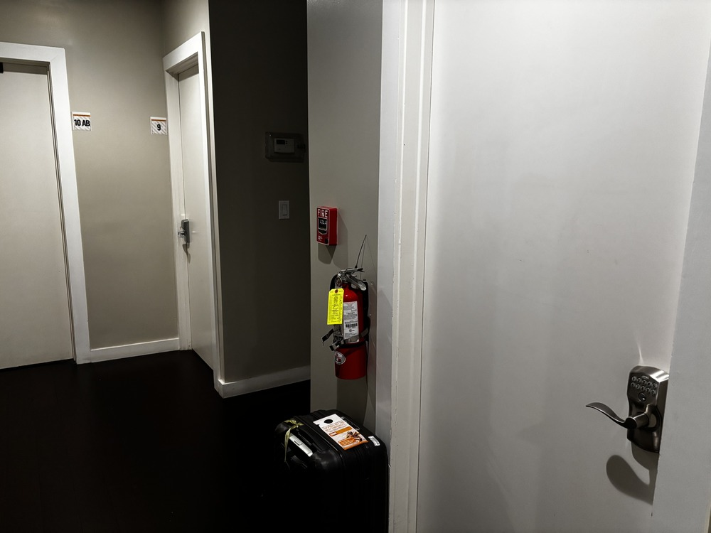
Stairs
2_left.jpeg
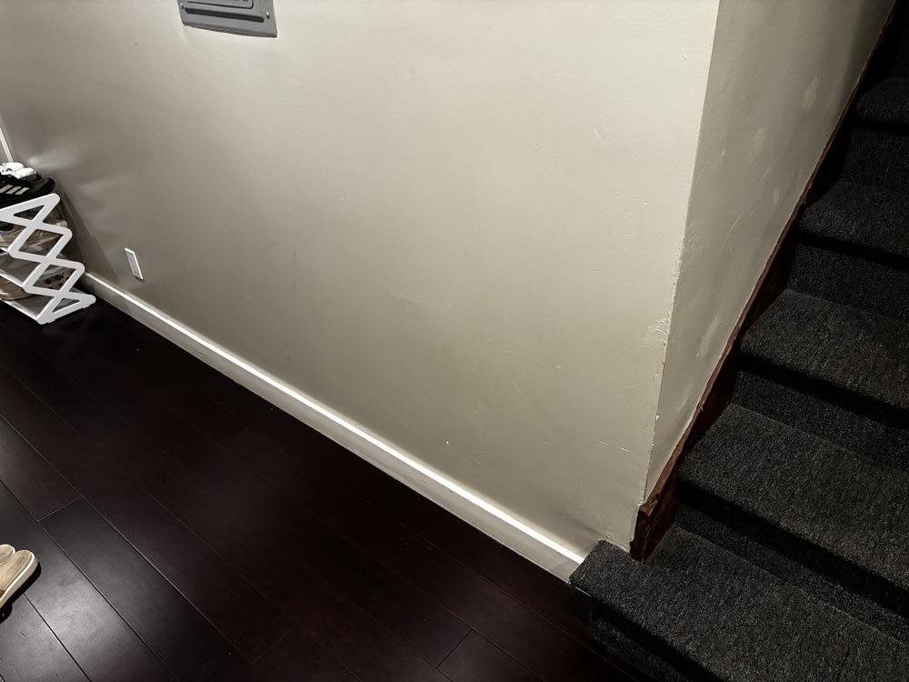
2_mid.jpeg (reference)
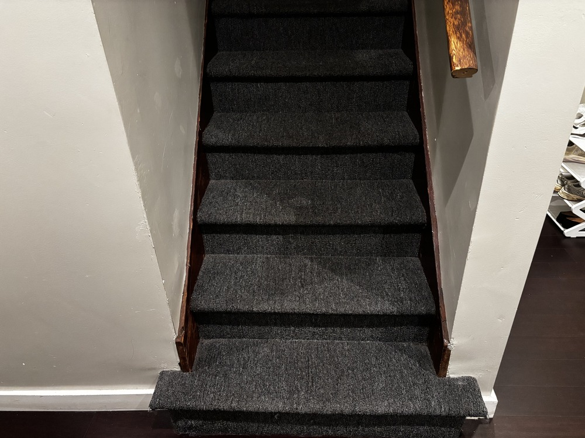
2_right.jpeg
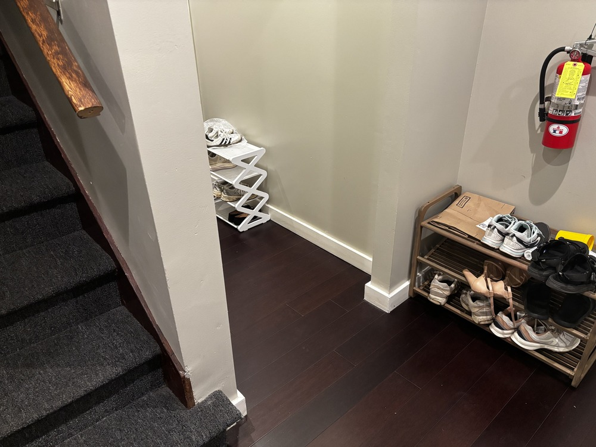
Lecture Theatre
3_left.jpeg
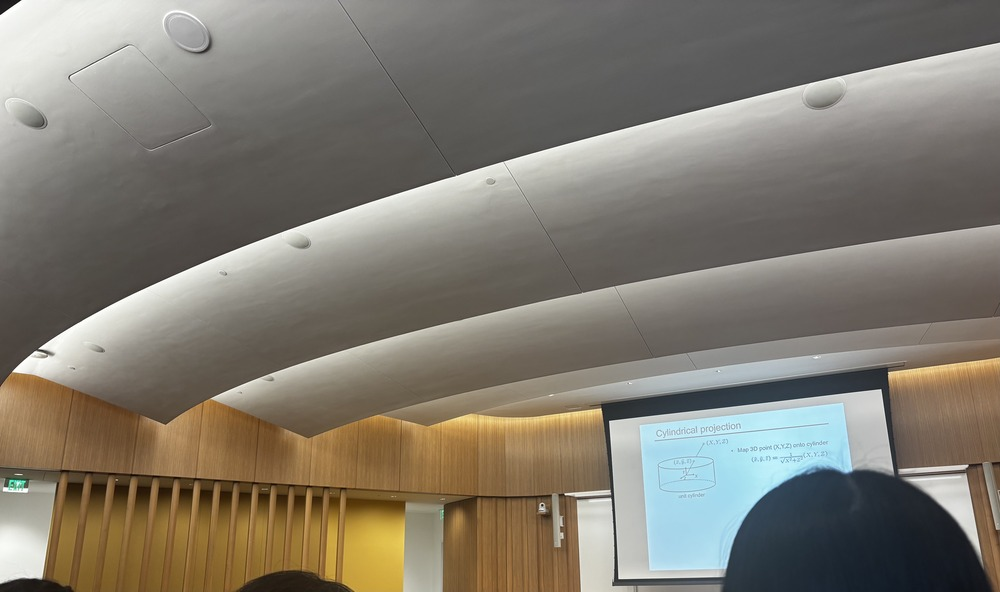
3_mid.jpeg (reference)
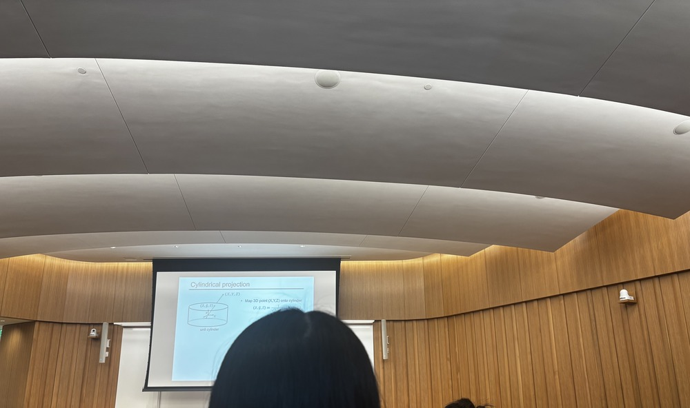
3_right.jpeg
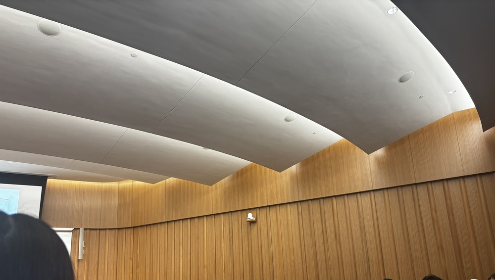
Photos for rectification
poster.jpeg
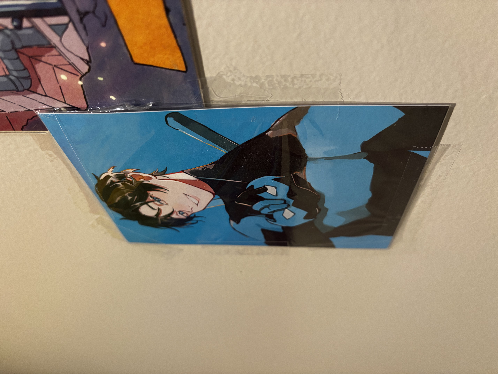
utah.jpeg
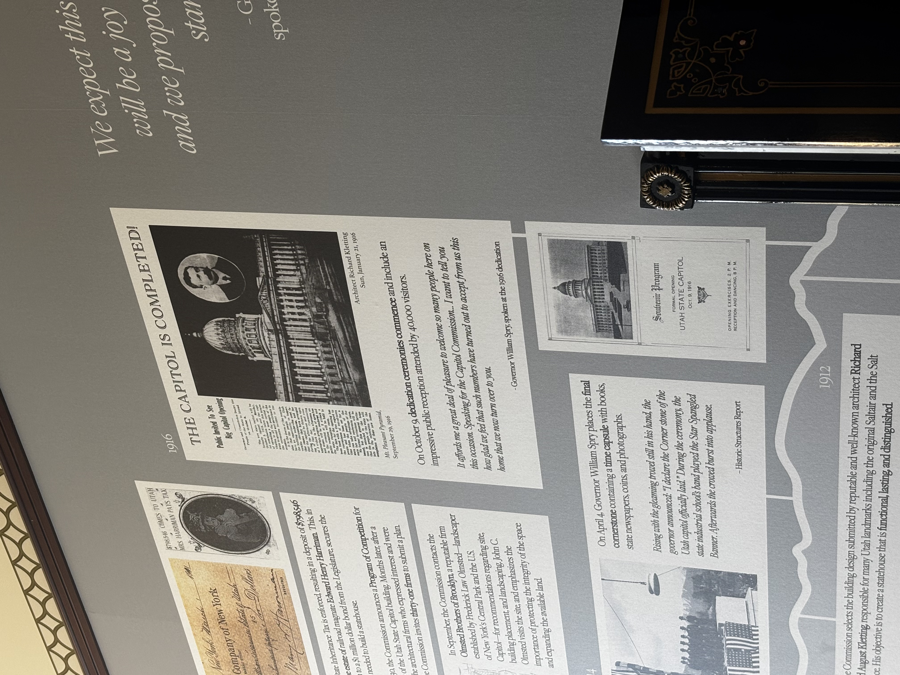
I took every photo handheld with my iPhone 15. For each mosaic I stood in one spot and turned
on the spot to shoot the left, middle and right views, so the centre of projection stays
roughly fixed. I had no tripod, so the phone drifted a little between shots, which is the main
source of the small misalignments in A.2 and A.4. For rectification I photographed
poster.jpeg from a steep angle and utah.jpeg from a shallower one,
so the poster is the harder test.
A.2 · Recovering Homographies
Each correspondence $(x, y) \to (x', y')$ gives two equations that are linear in the eight unknowns $\mathbf{h} = (h_1, \dots, h_8)$ once the division by $w$ is multiplied out, with $H_{33} = 1$:
$$\begin{bmatrix} x & y & 1 & 0 & 0 & 0 & -x x' & -y x' \\ 0 & 0 & 0 & x & y & 1 & -x y' & -y y' \end{bmatrix}\mathbf{h} = \begin{bmatrix} x' \\ y' \end{bmatrix},\qquad H = \begin{bmatrix} h_1 & h_2 & h_3 \\ h_4 & h_5 & h_6 \\ h_7 & h_8 & 1 \end{bmatrix}$$
Four points would determine $H$ exactly, but then a couple of pixels of click error swing it a
lot. So I clicked 9 to 11 points per pair, stacked all the rows into one tall system
$A\mathbf{h} = \mathbf{b}$ ($A$ is $2n \times 8$) and solved it by least squares with
np.linalg.lstsq, which averages the click errors out. Each pair of neighbouring
photos is matched directly and the homographies are multiplied to reach the reference,
$H_{i \to ref} = H_{i+1 \to ref}\,H_{i \to i+1}$ (and the inverses on the other side), so the
outer photos do not need to overlap the reference.
click to show build_system() and computeH() code
def build_system(im1_pts, im2_pts):
"""A (2n x 8) and b (2n) with A h = b, h = [h1..h8], H = [[h1 h2 h3],[h4 h5 h6],[h7 h8 1]]."""
x, y = im1_pts[:, 0], im1_pts[:, 1]
xp, yp = im2_pts[:, 0], im2_pts[:, 1]
n = len(x)
A = np.zeros((2 * n, 8)); b = np.zeros(2 * n)
A[0::2, 0], A[0::2, 1], A[0::2, 2] = x, y, 1
A[0::2, 6], A[0::2, 7] = -x * xp, -y * xp
A[1::2, 3], A[1::2, 4], A[1::2, 5] = x, y, 1
A[1::2, 6], A[1::2, 7] = -x * yp, -y * yp
b[0::2], b[1::2] = xp, yp
return A, b
def computeH(im1_pts, im2_pts):
"""Least-squares homography (H[2,2] = 1) mapping im1_pts -> im2_pts, n >= 4 points."""
im1_pts = np.asarray(im1_pts, float); im2_pts = np.asarray(im2_pts, float)
assert len(im1_pts) >= 4 and im1_pts.shape == im2_pts.shape
A, b = build_system(im1_pts, im2_pts)
h, *_ = np.linalg.lstsq(A, b, rcond=None)
return np.append(h, 1.0).reshape(3, 3)
def chain_to_ref(pair_Hs, n, ref):
"""pair_Hs[j] maps image j -> image j+1. Returns the H taking every image into image `ref`."""
Hs = []
for i in range(n):
H = np.eye(3)
if i < ref:
for j in range(i, ref):
H = pair_Hs[j] @ H
else:
for j in range(i - 1, ref - 1, -1):
H = H @ np.linalg.inv(pair_Hs[j])
Hs.append(H / H[2, 2])
return Hs
Corridor
1_left ↔ 1_mid
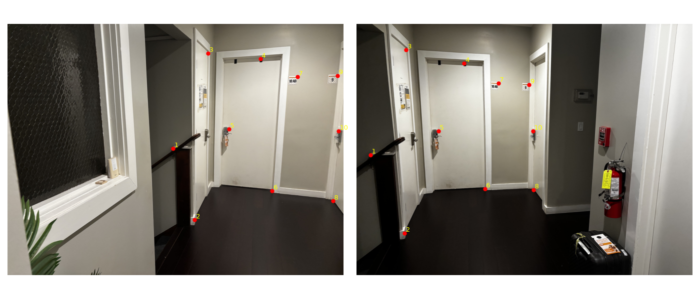
The first three correspondences of the 20 × 8 system $A\mathbf{h} = \mathbf{b}$ (10 points, 20 rows), and the recovered homography from 1_left to 1_mid. The full system is in H_mosaic1_0.txt.
$$\begin{bmatrix} 492.3 & 371.5 & 1.0 & 0 & 0 & 0 & -20400.0 & -15395.1 \\ 0 & 0 & 0 & 492.3 & 371.5 & 1.0 & -192142.5 & -145002.3 \\ 556.4 & 584.4 & 1.0 & 0 & 0 & 0 & -79542.2 & -83551.7 \\ 0 & 0 & 0 & 556.4 & 584.4 & 1.0 & -347122.6 & -364620.1 \\ 595.8 & 86.7 & 1.0 & 0 & 0 & 0 & -88115.0 & -12819.8 \\ 0 & 0 & 0 & 595.8 & 86.7 & 1.0 & -45777.2 & -6660.1 \\ \vdots & \vdots & \vdots & \vdots & \vdots & \vdots & \vdots & \vdots \end{bmatrix}\,\mathbf{h} = \begin{bmatrix} 41.4 \\ 390.3 \\ 143.0 \\ 623.9 \\ 147.9 \\ 76.8 \\ \vdots \end{bmatrix}$$
$$H = \begin{bmatrix} 2.4583 & 0.15394 & -1197.7 \\ 0.42218 & 2.0087 & -284.33 \\ 0.0014403 & 3.0675\times10^{-6} & 1 \end{bmatrix}$$
1_mid ↔ 1_right
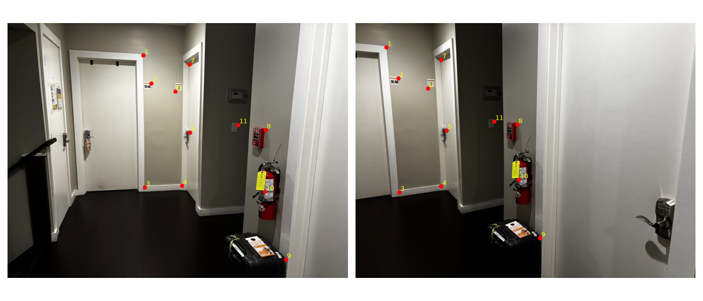
The first three correspondences of the 22 × 8 system $A\mathbf{h} = \mathbf{b}$ (11 points, 22 rows), and the recovered homography from 1_mid to 1_right. The full system is in H_mosaic1_1.txt.
$$\begin{bmatrix} 398.7 & 94.6 & 1.0 & 0 & 0 & 0 & -36168.9 & -8579.4 \\ 0 & 0 & 0 & 398.7 & 94.6 & 1.0 & -28273.7 & -6706.6 \\ 422.3 & 176.4 & 1.0 & 0 & 0 & 0 & -52885.3 & -22086.0 \\ 0 & 0 & 0 & 422.3 & 176.4 & 1.0 & -68666.6 & -28676.6 \\ 402.6 & 481.9 & 1.0 & 0 & 0 & 0 & -51607.4 & -61771.7 \\ 0 & 0 & 0 & 402.6 & 481.9 & 1.0 & -199998.3 & -239389.0 \\ \vdots & \vdots & \vdots & \vdots & \vdots & \vdots & \vdots & \vdots \end{bmatrix}\,\mathbf{h} = \begin{bmatrix} 90.7 \\ 70.9 \\ 125.2 \\ 162.6 \\ 128.2 \\ 496.7 \\ \vdots \end{bmatrix}$$
$$H = \begin{bmatrix} 1.7196 & 0.11323 & -575.32 \\ 0.16682 & 1.488 & -115.02 \\ 0.00076751 & 6.9517\times10^{-5} & 1 \end{bmatrix}$$
Stairs
2_left ↔ 2_mid
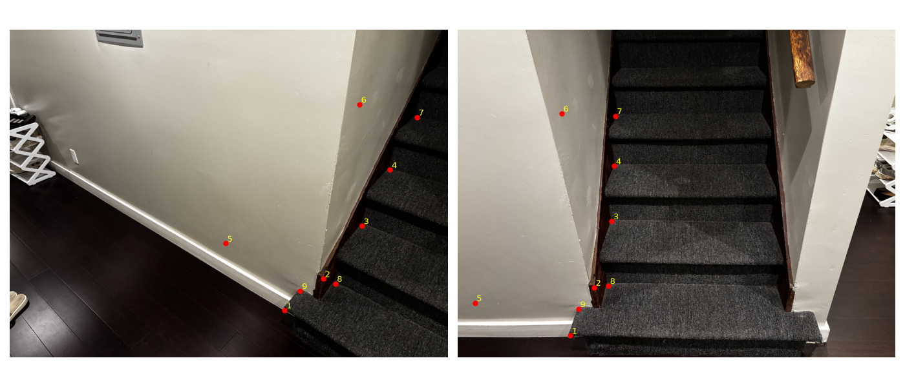
The first three correspondences of the 18 × 8 system $A\mathbf{h} = \mathbf{b}$ (9 points, 18 rows), and the recovered homography from 2_left to 2_mid. The full system is in H_mosaic2_0.txt.
$$\begin{bmatrix} 627.4 & 641.6 & 1.0 & 0 & 0 & 0 & -161418.9 & -165084.7 \\ 0 & 0 & 0 & 627.4 & 641.6 & 1.0 & -439012.1 & -448982.0 \\ 715.1 & 569.7 & 1.0 & 0 & 0 & 0 & -222756.1 & -177453.6 \\ 0 & 0 & 0 & 715.1 & 569.7 & 1.0 & -421456.7 & -335743.9 \\ 803.8 & 448.4 & 1.0 & 0 & 0 & 0 & -282873.2 & -157809.3 \\ 0 & 0 & 0 & 803.8 & 448.4 & 1.0 & -351729.2 & -196222.8 \\ \vdots & \vdots & \vdots & \vdots & \vdots & \vdots & \vdots & \vdots \end{bmatrix}\,\mathbf{h} = \begin{bmatrix} 257.3 \\ 699.8 \\ 311.5 \\ 589.4 \\ 351.9 \\ 437.6 \\ \vdots \end{bmatrix}$$
$$H = \begin{bmatrix} 2.0091 & 0.71234 & -1278 \\ -0.19912 & 1.6806 & 239.06 \\ 0.0010889 & 2.5751\times10^{-5} & 1 \end{bmatrix}$$
2_mid ↔ 2_right
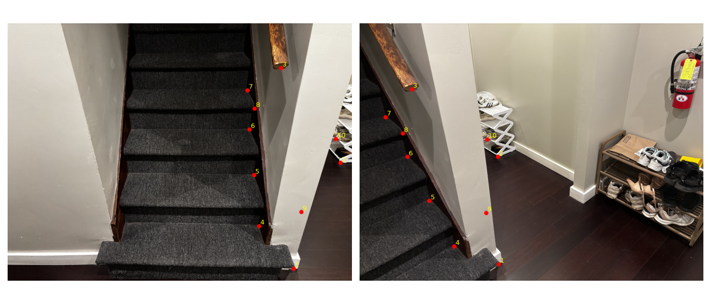
The first three correspondences of the 20 × 8 system $A\mathbf{h} = \mathbf{b}$ (10 points, 20 rows), and the recovered homography from 2_mid to 2_right. The full system is in H_mosaic2_1.txt.
$$\begin{bmatrix} 830.4 & 713.6 & 1.0 & 0 & 0 & 0 & -336438.2 & -289098.7 \\ 0 & 0 & 0 & 830.4 & 713.6 & 1.0 & -581916.3 & -500036.0 \\ 966.4 & 406.0 & 1.0 & 0 & 0 & 0 & -387736.3 & -162904.8 \\ 0 & 0 & 0 & 966.4 & 406.0 & 1.0 & -375266.2 & -157665.5 \\ 793.9 & 129.1 & 1.0 & 0 & 0 & 0 & -120544.4 & -19596.6 \\ 0 & 0 & 0 & 793.9 & 129.1 & 1.0 & -151775.7 & -24673.9 \\ \vdots & \vdots & \vdots & \vdots & \vdots & \vdots & \vdots & \vdots \end{bmatrix}\,\mathbf{h} = \begin{bmatrix} 405.1 \\ 700.8 \\ 401.2 \\ 388.3 \\ 151.8 \\ 191.2 \\ \vdots \end{bmatrix}$$
$$H = \begin{bmatrix} 2.3033 & 0.89046 & -1619.6 \\ -0.1976 & 2.0845 & 282.94 \\ 0.0013648 & 0.00021188 & 1 \end{bmatrix}$$
Lecture Theatre
3_left ↔ 3_mid
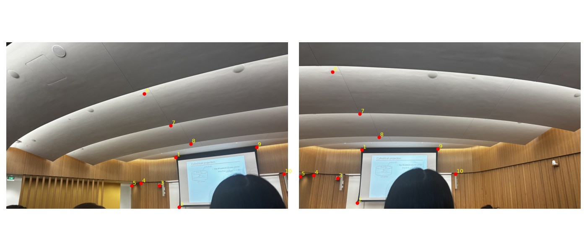
The first three correspondences of the 20 × 8 system $A\mathbf{h} = \mathbf{b}$ (10 points, 20 rows), and the recovered homography from 3_left to 3_mid. The full system is in H_mosaic3_0.txt.
$$\begin{bmatrix} 600.8 & 408.9 & 1.0 & 0 & 0 & 0 & -133846.6 & -91091.0 \\ 0 & 0 & 0 & 600.8 & 408.9 & 1.0 & -229631.4 & -156278.6 \\ 612.6 & 585.3 & 1.0 & 0 & 0 & 0 & -126821.0 & -121169.7 \\ 0 & 0 & 0 & 612.6 & 585.3 & 1.0 & -349478.3 & -333905.1 \\ 542.6 & 509.4 & 1.0 & 0 & 0 & 0 & -74360.6 & -69809.1 \\ 0 & 0 & 0 & 542.6 & 509.4 & 1.0 & -261954.4 & -245920.7 \\ \vdots & \vdots & \vdots & \vdots & \vdots & \vdots & \vdots & \vdots \end{bmatrix}\,\mathbf{h} = \begin{bmatrix} 222.8 \\ 382.2 \\ 207.0 \\ 570.5 \\ 137.0 \\ 482.8 \\ \vdots \end{bmatrix}$$
$$H = \begin{bmatrix} 2.1401 & -0.25406 & -814.06 \\ 0.66249 & 1.7503 & -479.04 \\ 0.0011705 & -7.9511\times10^{-5} & 1 \end{bmatrix}$$
3_mid ↔ 3_right
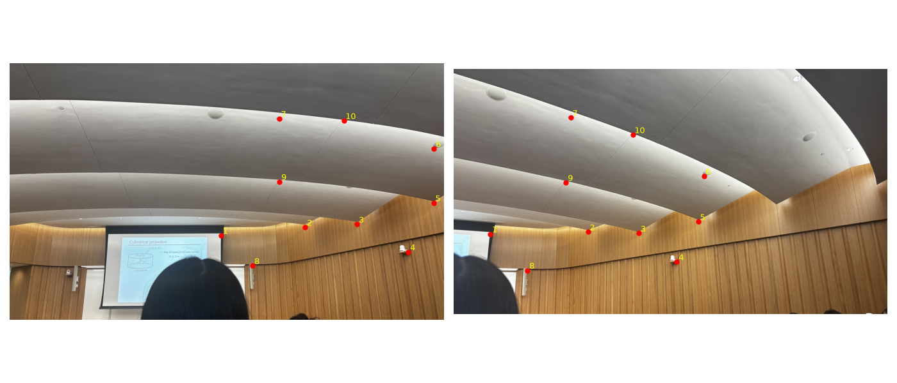
The first three correspondences of the 20 × 8 system $A\mathbf{h} = \mathbf{b}$ (10 points, 20 rows), and the recovered homography from 3_mid to 3_right. The full system is in H_mosaic3_1.txt.
$$\begin{bmatrix} 486.4 & 397.0 & 1.0 & 0 & 0 & 0 & -41250.5 & -33669.4 \\ 0 & 0 & 0 & 486.4 & 397.0 & 1.0 & -185357.3 & -151292.2 \\ 680.6 & 378.3 & 1.0 & 0 & 0 & 0 & -210668.0 & -117096.1 \\ 0 & 0 & 0 & 680.6 & 378.3 & 1.0 & -255997.0 & -142291.4 \\ 799.9 & 371.4 & 1.0 & 0 & 0 & 0 & -341403.4 & -158522.9 \\ 0 & 0 & 0 & 799.9 & 371.4 & 1.0 & -303222.3 & -140794.4 \\ \vdots & \vdots & \vdots & \vdots & \vdots & \vdots & \vdots & \vdots \end{bmatrix}\,\mathbf{h} = \begin{bmatrix} 84.8 \\ 381.1 \\ 309.5 \\ 376.1 \\ 426.8 \\ 379.1 \\ \vdots \end{bmatrix}$$
$$H = \begin{bmatrix} 2.1066 & -0.16036 & -831.06 \\ 0.57062 & 1.733 & -386.1 \\ 0.0011165 & -4.7787\times10^{-5} & 1 \end{bmatrix}$$
Reprojection error
Every clicked point in the first image of a pair is sent through its $H$ and compared with where I clicked it in the second image.
| Set | Pair | Points | Mean error (px) | Max error (px) |
|---|---|---|---|---|
| Corridor | 1_left → 1_mid | 10 | 1.41 | 3.38 |
| Corridor | 1_mid → 1_right | 11 | 2.08 | 4.70 |
| Stairs | 2_left → 2_mid | 9 | 3.17 | 5.50 |
| Stairs | 2_mid → 2_right | 10 | 3.40 | 5.13 |
| Lecture Theatre | 3_left → 3_mid | 10 | 1.57 | 3.60 |
| Lecture Theatre | 3_mid → 3_right | 10 | 1.73 | 3.62 |
Mean reprojection errors range from 1.4 to 3.4 px, and the worst single point is 5.5 px off. Mosaic 2 is the least accurate (3.2 px and 3.4 px mean), while mosaics 1 and 3 stay between 1.4 and 2.1 px. I see three likely causes. First, click precision: I place points by eye on a 1000 px image, so missing by a pixel or two is normal. Second, parallax: the phone moved slightly as I rotated by hand, so nearby objects shift more between shots than distant ones, and a single homography can only fit one depth well. Third, lens distortion near the edges of the frame, which a homography does not model. Errors this small are mostly hidden by the blending, but they show up as slight mismatches when I zoom in on the mosaics (see A.4).
A.3 · Warping the Images & Rectification
The four corners of the image are sent through $H$ to get the bounding box of the output. Then every output pixel is sent back through $H^{-1}$ to a position in the source, and the colour is read there. If that position falls outside the photo, the pixel gets alpha $= 0$ and is left black. The two warps differ only in how they read the source at a non-integer position.
$$I_{out}(x, y) = I_{src}\big(H^{-1}[x, y, 1]^\top\big)$$
Nearest neighbour rounds the source position to the closest pixel and copies it. Bilinear takes the weighted average of the four surrounding pixels, with $a = x - \lfloor x \rfloor$ and $b = y - \lfloor y \rfloor$:
$$I(x, y) = (1-a)(1-b)\,I_{00} + a(1-b)\,I_{10} + (1-a)b\,I_{01} + ab\,I_{11}$$
click to show inverse warp code (bbox_of, _inverse_coords, both warps)
def bbox_of(shape, H):
"""Bounding box (xmin, ymin, xmax, ymax) of the image after sending its 4 corners through H."""
h, w = shape[:2]
c = np.array([[0, 0], [w - 1, 0], [w - 1, h - 1], [0, h - 1]], float)
c = np.round(apply_H(H, c), 6) # kill float noise before floor/ceil
return (int(np.floor(c[:, 0].min())), int(np.floor(c[:, 1].min())),
int(np.ceil(c[:, 0].max())) + 1, int(np.ceil(c[:, 1].max())) + 1)
def _inverse_coords(shape, H, bbox):
"""For every output pixel in bbox: where it comes from in the source (x, y) = H^-1 [u, v, 1]."""
xmin, ymin, xmax, ymax = bbox
u, v = np.meshgrid(np.arange(xmin, xmax), np.arange(ymin, ymax))
P = np.stack([u.ravel(), v.ravel(), np.ones(u.size)])
S = np.linalg.inv(H) @ P
with np.errstate(divide="ignore", invalid="ignore"):
x = (S[0] / S[2]).reshape(u.shape)
y = (S[1] / S[2]).reshape(u.shape)
h, w = shape[:2]
valid = np.isfinite(x) & np.isfinite(y) & (x >= 0) & (x <= w - 1) & (y >= 0) & (y <= h - 1)
return np.where(valid, x, 0), np.where(valid, y, 0), valid
def warpImageNearestNeighbor(im, H, bbox=None):
"""Inverse warp, nearest neighbour. Returns (warped, alpha, (xmin, ymin))."""
im, flat = _prep(im)
bbox = bbox or bbox_of(im.shape, H)
x, y, valid = _inverse_coords(im.shape, H, bbox)
out = im[np.rint(y).astype(int), np.rint(x).astype(int)]
out[~valid] = 0
return (out[..., 0] if flat else out), valid.astype(float), (bbox[0], bbox[1])
def warpImageBilinear(im, H, bbox=None):
"""Inverse warp, bilinear (weighted mean of the 4 neighbours). Returns (warped, alpha, (xmin, ymin))."""
im, flat = _prep(im)
h, w = im.shape[:2]
bbox = bbox or bbox_of(im.shape, H)
x, y, valid = _inverse_coords(im.shape, H, bbox)
x0 = np.clip(np.floor(x).astype(int), 0, max(w - 2, 0)); x1 = np.minimum(x0 + 1, w - 1)
y0 = np.clip(np.floor(y).astype(int), 0, max(h - 2, 0)); y1 = np.minimum(y0 + 1, h - 1)
dx = (x - x0)[..., None]; dy = (y - y0)[..., None]
out = ((1 - dx) * (1 - dy) * im[y0, x0] + dx * (1 - dy) * im[y0, x1] +
(1 - dx) * dy * im[y1, x0] + dx * dy * im[y1, x1])
out[~valid] = 0
return (out[..., 0] if flat else out), valid.astype(float), (bbox[0], bbox[1])
Rectification
To test the warps on single photos, I clicked the four corners (top-left, top-right, bottom-right, bottom-left) of an object that really is a rectangle, and mapped them to an upright rectangle whose width and height are the mean lengths of the opposite clicked edges. Everything lying on the same plane is straightened too. The output is cropped to one rectangle-size margin around the object, since parts of the photo far from the plane stretch enormously.
click to show rectify_setup() code
def rectify_setup(im, corners, long_side=800, margin=1.0):
"""corners = TL, TR, BR, BL of a real rectangle. Maps them to an upright rectangle whose
width/height are the mean lengths of the opposite edges. Returns H, output bbox, rect size, target."""
c = np.asarray(corners, float)
w0 = (np.linalg.norm(c[1] - c[0]) + np.linalg.norm(c[2] - c[3])) / 2
h0 = (np.linalg.norm(c[3] - c[0]) + np.linalg.norm(c[2] - c[1])) / 2
s = long_side / max(w0, h0)
out_w, out_h = int(round(w0 * s)), int(round(h0 * s))
target = np.array([[0, 0], [out_w - 1, 0], [out_w - 1, out_h - 1], [0, out_h - 1]], float)
H = computeH(c, target)
x0, y0, x1, y1 = bbox_of(im.shape, H) # whole photo, clamped: far-from-plane areas explode
bbox = (max(x0, -int(margin * out_w)), max(y0, -int(margin * out_h)),
min(x1, out_w + int(margin * out_w)), min(y1, out_h + int(margin * out_h)))
return H, bbox, (out_w, out_h), target
Rectification 1: poster (rectangle 371 × 800)
Original, clicked corners
Nearest neighbour
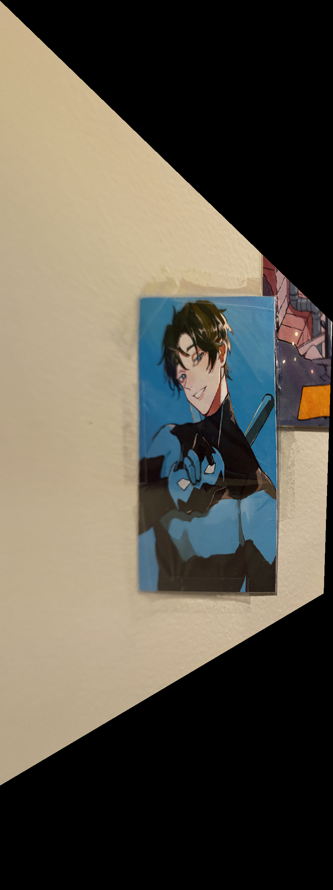
Bilinear
$$H_{rect\,1} = \begin{bmatrix} 0.025592 & -1.0937 & 527.2 \\ 0.80994 & -0.56817 & 68.681 \\ 9.7936\times10^{-5} & -0.0011077 & 1 \end{bmatrix}$$
The poster now looks front-on, with straight, parallel edges. The side that was farther from the camera is blurrier than the near side. Rectification stretches the far side the most, because it covers fewer pixels in the photo, so each output pixel there is interpolated from very little source detail. The effect is strong here because I shot the poster at such a steep angle.
Rectification 2: utah (rectangle 450 × 800)
Original, clicked corners
Nearest neighbour
Bilinear
$$H_{rect\,2} = \begin{bmatrix} 0.18674 & -3.1747 & 1128.3 \\ 3.1561 & -0.3412 & -1756.8 \\ 0.00019179 & -0.00042703 & 1 \end{bmatrix}$$
This one is front-on as well. I shot it from a shallower angle, so the far side is stretched less and the blur is much harder to see than it is for the poster.
A.3 · Nearest Neighbour vs. Bilinear
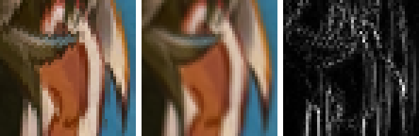
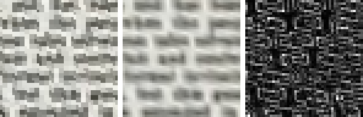
| Image | Canvas size | Nearest (s) | Bilinear (s) | Slowdown | Max |NN − bilinear| |
|---|---|---|---|---|---|
| poster | 900 × 2400 | 0.086 | 0.237 | 2.8× | 0.289 |
| utah | 1350 × 2110 | 0.098 | 0.319 | 3.3× | 0.334 |
Quality. Nearest neighbour copies exactly one source pixel per output pixel, so slanted edges and text come out blocky and jagged (stair-steps) and thin strokes get uneven. Bilinear averages four pixels, so edges are smooth but slightly softer. The difference image highlights the regions where the two interpolation methods produce different pixel values. It is bright along edges and near zero on flat areas.
Speed. Bilinear does four lookups and a weighted sum per pixel instead of one lookup, and was about 3.0× slower here (best of 3 runs). Both finish quickly, so the quality is worth the cost and I use bilinear for the mosaics.
A.4 · Blending the Images into a Mosaic
The middle photo is left unwarped (the reference). The homographies from A.2 are chained to
take every other photo into the reference frame. The four corners of every photo are sent
through its $H$, and the canvas is the bounding box of all of them. Each photo is then warped
onto that canvas with bilinear inverse warping, which gives a stack of aligned images, each
with an alpha mask. Each photo also gets a weight map: its distance to the nearest image edge
(distance_transform_edt), normalised to 1 at the centre and falling to 0 at the
edge, warped with the same $H$.
Pasting one photo over another leaves hard seams because exposure differs. Feathering is a weighted average with those weights, so each photo fades out toward its border.
$$I_{feather} = \frac{\sum_i w_i I_i}{\sum_i w_i}$$
Where photos are slightly misaligned, feathering ghosts fine detail, so my final mosaics use a 2-level Laplacian blend. Each warped photo is split into a low band (a Gaussian blur, normalised by the blurred alpha so the black outside the photo does not bleed in) and a high band (the photo minus its low band). The low bands are feathered. The high band at each pixel comes from the single photo with the largest weight there, so edges are never averaged with a second copy.
$$I_{two\text{-}band} = \frac{\sum_i w_i\,\mathrm{LP}(I_i)}{\sum_i w_i} + \mathrm{HP}\big(I_{\arg\max_i w_i}\big),\quad \mathrm{HP} = I - \mathrm{LP}$$
- Image size
- long side at most 1000 px
- Interpolation
- bilinear
- Weights
- distance to the nearest image edge
- Blur $\sigma$
- 4
- Correspondences per pair
- 9 to 11
click to show blending code (warp_stack, blend_feather, blend_two_band)
def warp_stack(ims, Hs):
"""Warp every image (bilinear) onto one shared canvas. Returns images, alphas, weights, canvas origin."""
boxes = [bbox_of(im.shape, H) for im, H in zip(ims, Hs)]
bbox = (min(b[0] for b in boxes), min(b[1] for b in boxes), max(b[2] for b in boxes), max(b[3] for b in boxes))
if (bbox[2] - bbox[0]) > 8000 or (bbox[3] - bbox[1]) > 8000:
raise SystemExit("The mosaic canvas would be %d x %d px: a homography is badly off. "
"Re-click those points (python mosaic.py --reclick)." % (bbox[2] - bbox[0], bbox[3] - bbox[1]))
wi, ai, wts = [], [], []
for im, H in zip(ims, Hs):
w, a, _ = warpImageBilinear(im, H, bbox=bbox)
wm, _, _ = warpImageBilinear(_weight_map(im.shape), H, bbox=bbox)
wi.append(w); ai.append(a); wts.append(wm * a)
f = np.float32
return np.array(wi, f), np.array(ai, f), np.array(wts, f), (bbox[0], bbox[1])
def blend_feather(wi, wts):
"""Weighted average with weight = distance to the image edge."""
den = wts.sum(0)[..., None]
out = (wts[..., None] * wi).sum(0) / np.maximum(den, 1e-6)
out[den[..., 0] == 0] = 0
return out
def blend_two_band(wi, ai, wts, sigma=4):
"""2-level Laplacian: low band is feathered, high band comes from the image with the largest weight."""
lows = np.array([_norm_blur(w, a, sigma) * a[..., None] for w, a in zip(wi, ai)], np.float32)
highs = (wi - lows) * ai[..., None]
low = blend_feather(lows, wts)
win = np.argmax(wts, axis=0)
high = np.take_along_axis(highs, win[None, ..., None], 0)[0]
out = np.clip(low + high, 0, 1)
out[wts.sum(0) == 0] = 0
return out
Corridor (canvas 2857 × 1504)
Source images
1_left.jpeg
1_mid.jpeg
1_right.jpeg
Warped onto the shared canvas
Warped 1_left
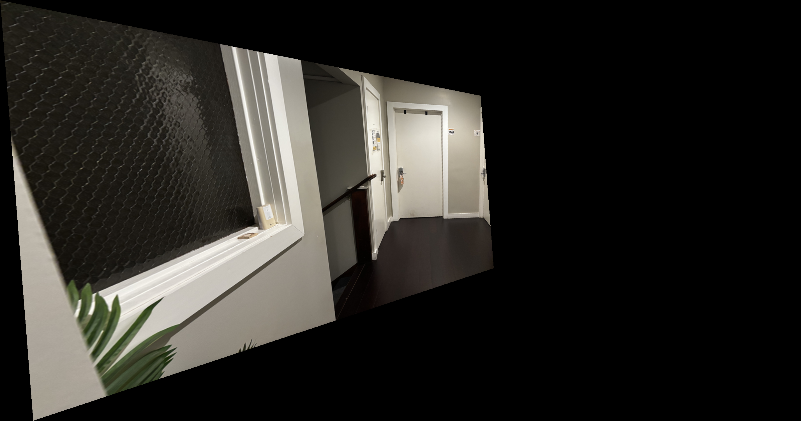
Warped 1_mid
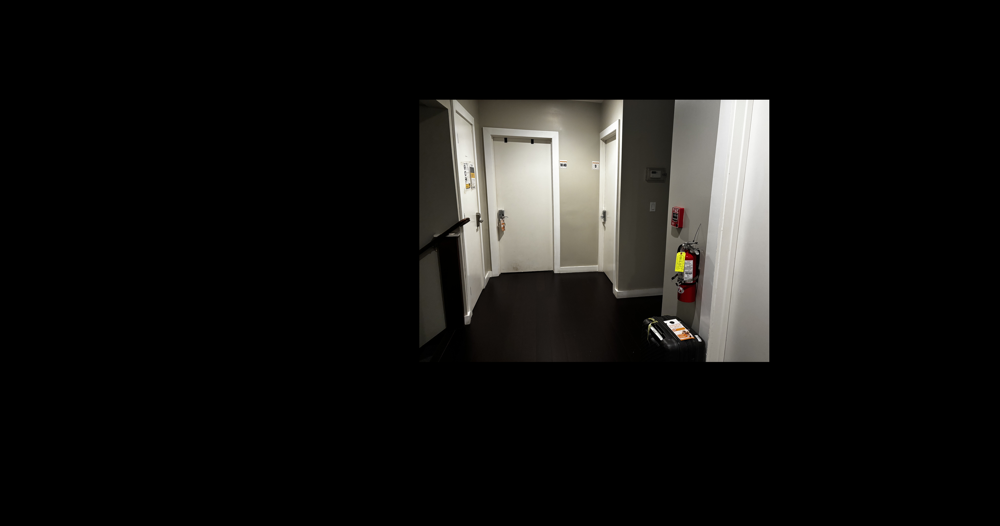
Warped 1_right
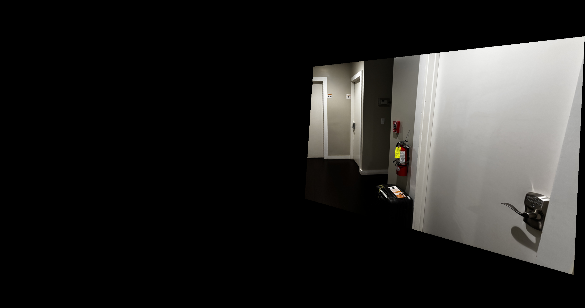
Weight maps
Weight map 0
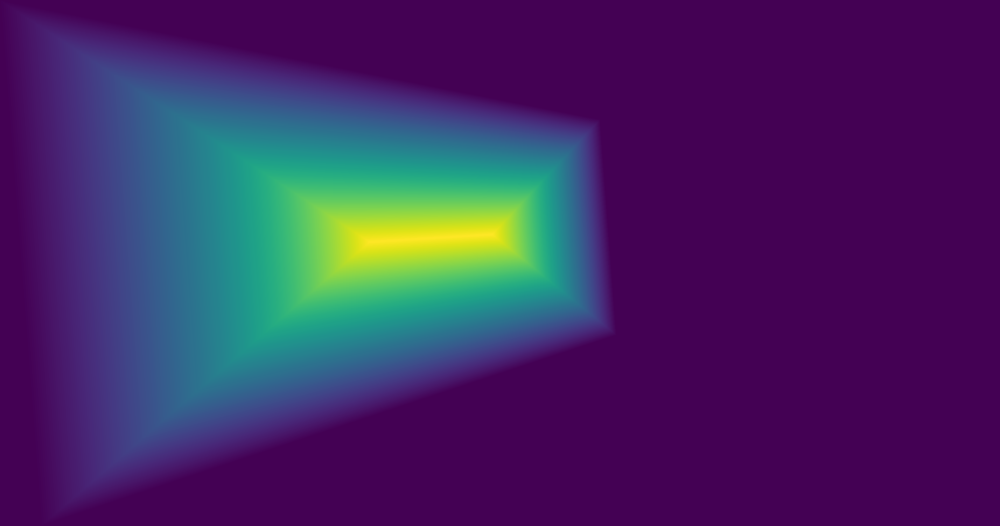
Weight map 1
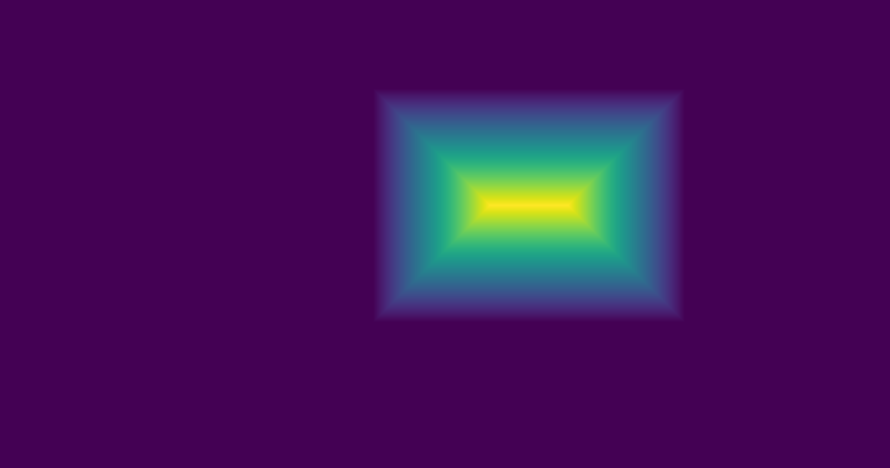
Weight map 2
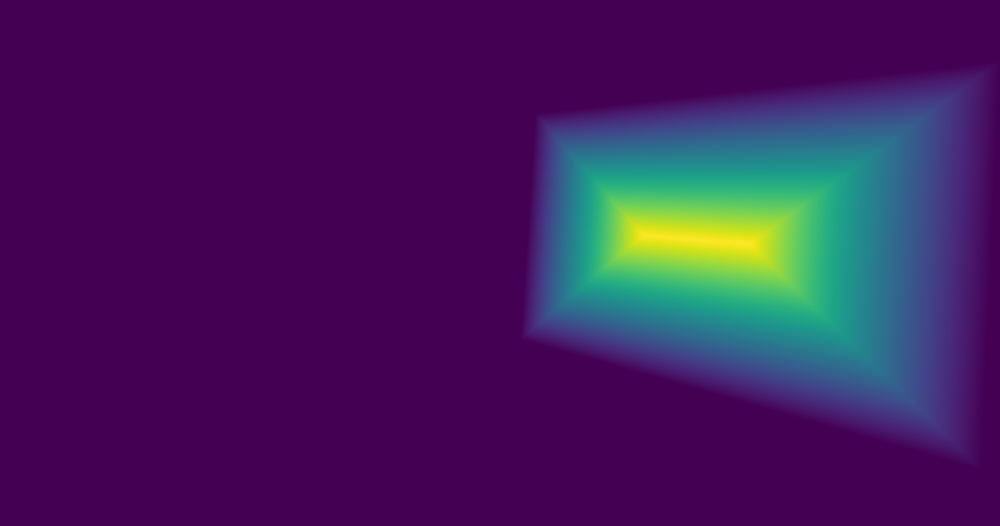
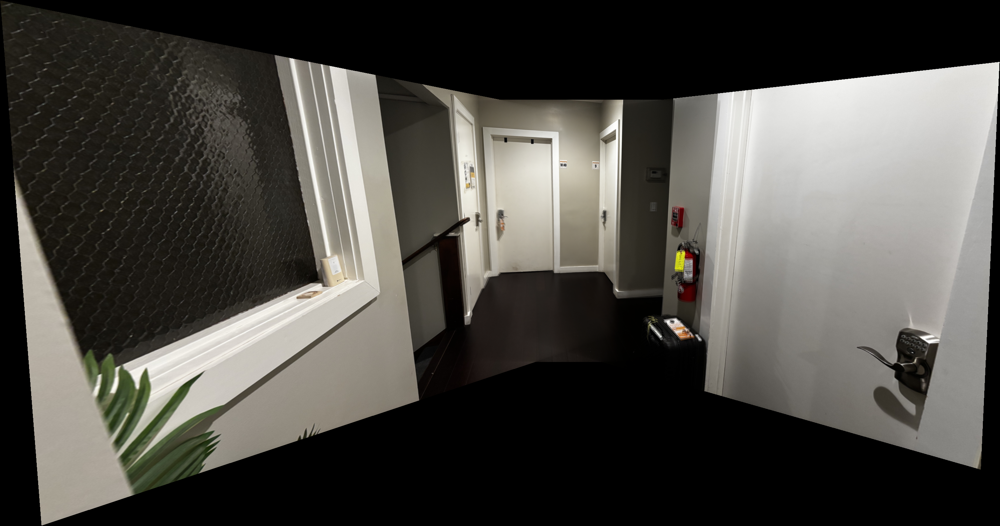
The mosaic lines up well overall. Zoomed in, the middle door has a few clipped edges and is not a perfect rectangle, which is leftover misalignment from the homographies (mean error 1.4 px and 2.1 px for this set). The 2-level blend looks better than plain feathering. Feathering averages two slightly offset copies of an edge, while the 2-level blend takes each edge from a single photo, so it stays sharp.
Stairs (canvas 3979 × 1538)
Source images
2_left.jpeg
2_mid.jpeg
2_right.jpeg
Warped onto the shared canvas
Warped 2_left
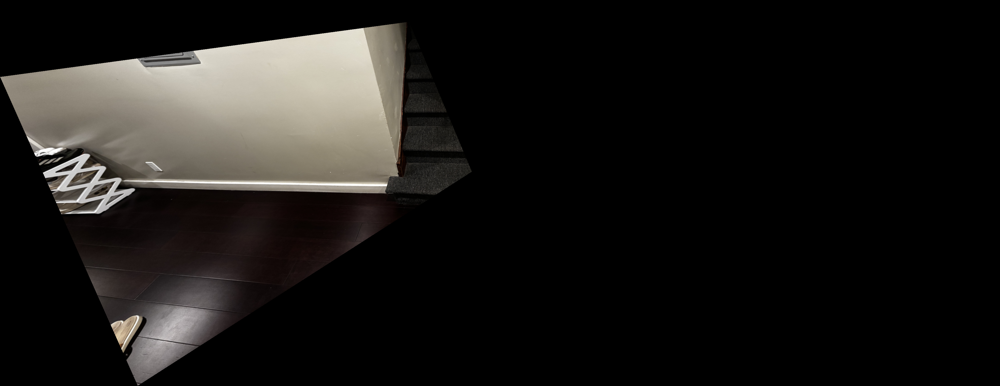
Warped 2_mid
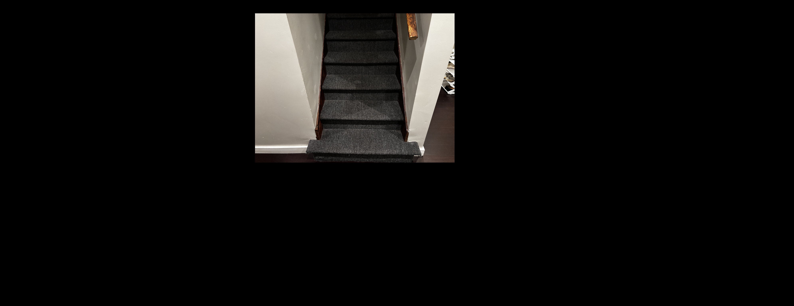
Warped 2_right
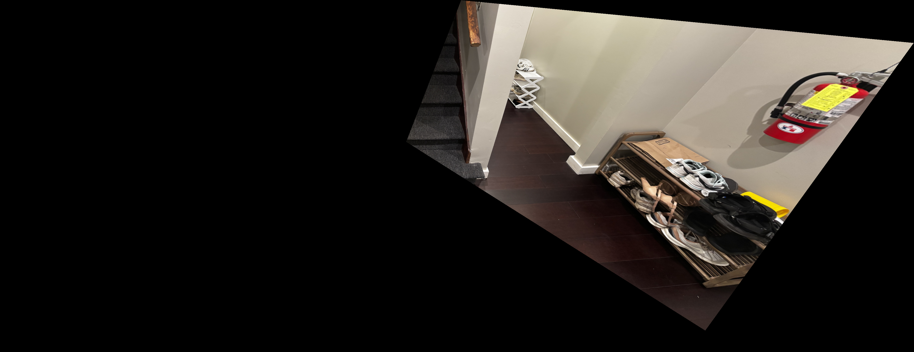
Weight maps
Weight map 0
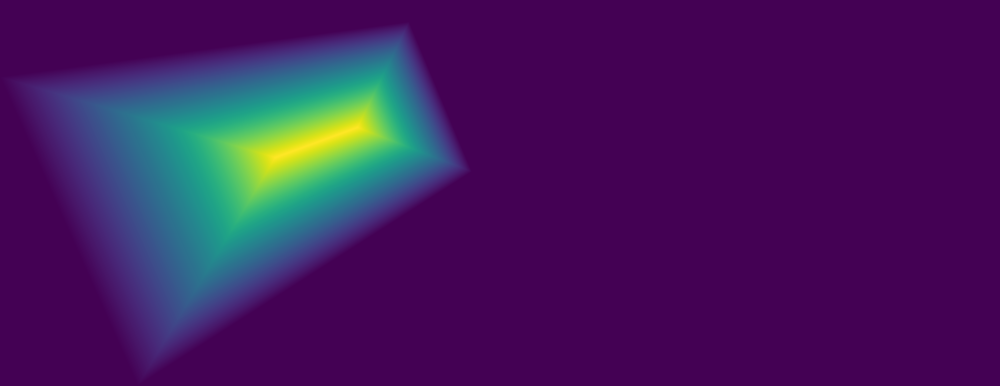
Weight map 1
Weight map 2
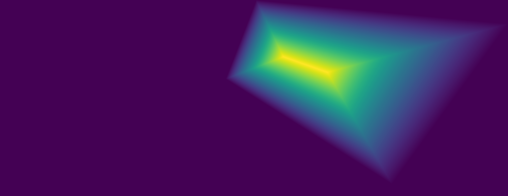
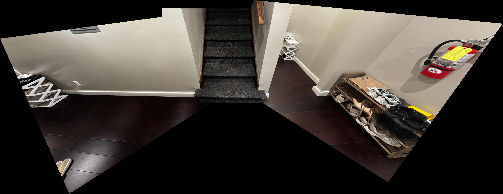
The mosaic lines up well overall, but zooming in shows a small mismatch at the skirting board. This is the set with the largest reprojection error (3.2 px and 3.4 px mean), so some mismatch is expected. The 2-level blend again looks better than feathering, for the same reason as in mosaic 1.
Lecture Theatre (canvas 2929 × 1087)
Source images
3_left.jpeg
3_mid.jpeg
3_right.jpeg
Warped onto the shared canvas
Warped 3_left
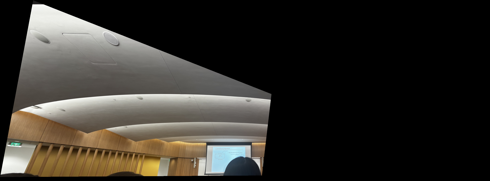
Warped 3_mid
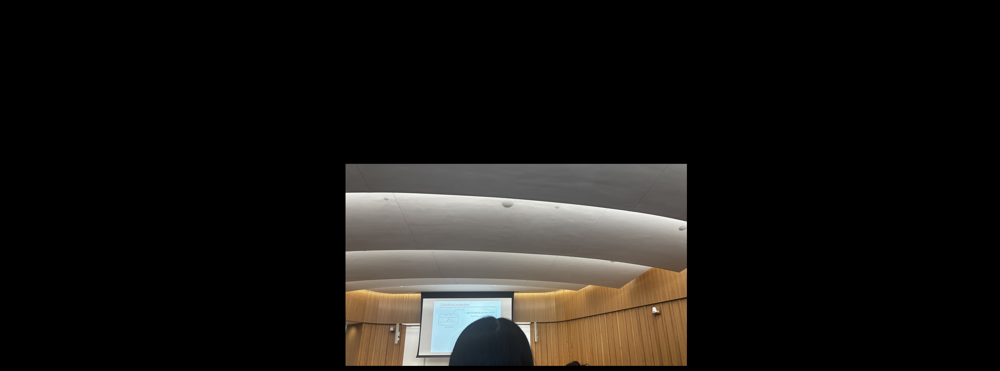
Warped 3_right
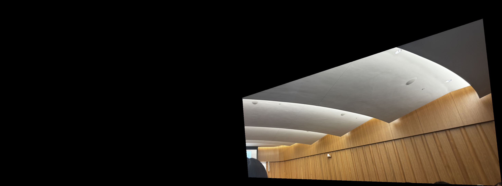
Weight maps
Weight map 0
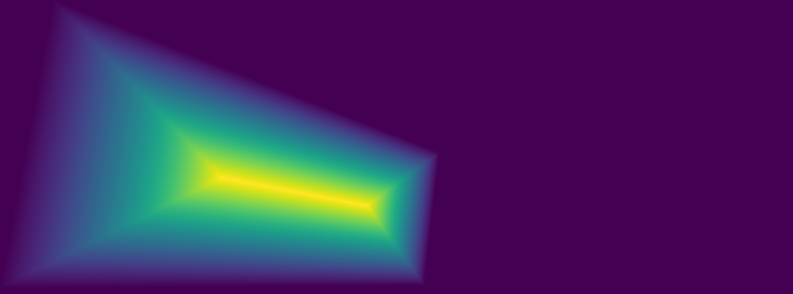
Weight map 1
Weight map 2
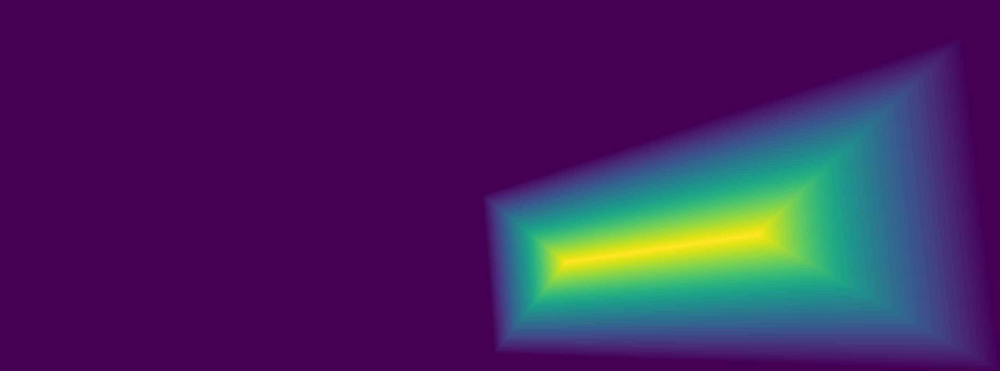
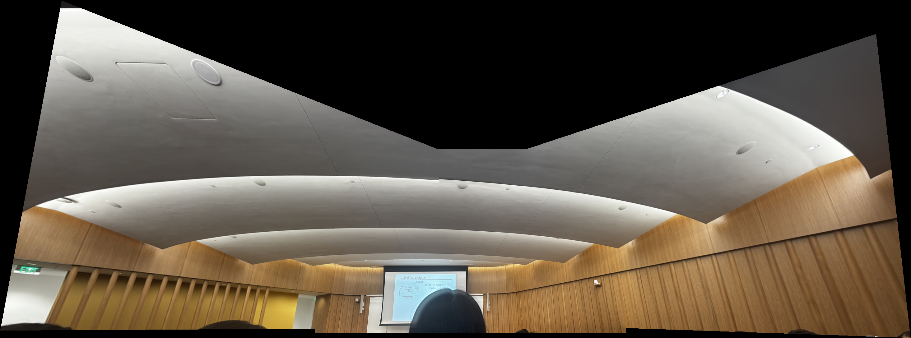
Everything lines up well except the person's head. It is much closer to the camera than the rest of the scene, so it shifts between shots by more than the homography (which is fitted to the distant background) can account for. This is parallax, and one homography cannot remove it. Me rotating the camera by hand also moves it slightly between shots (human error), which a tripod would probably avoid. The 2-level blend looks better than feathering here too.